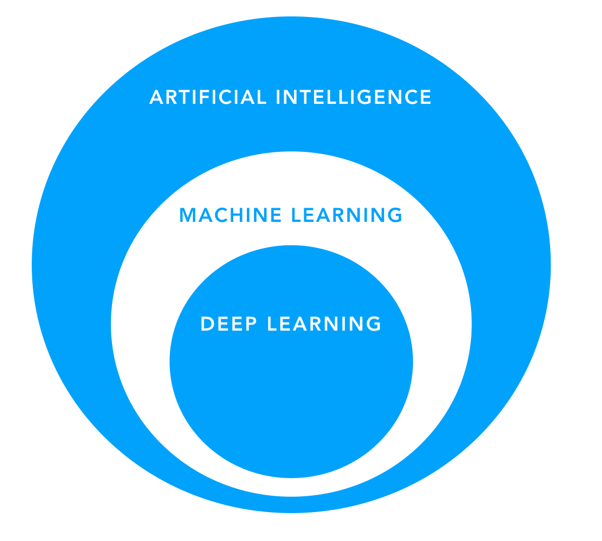

AI vs. ML
Note: This page is referenced as an additional resource in the Ideation Phase.
You may have heard the terms artificial intelligence (AI), machine learning (ML), and deep learning (DL) thrown around interchangeably, but they are all specific types of algorithms that have their own meanings. Deep learning (DL) is a subtype of machine learning (ML), and machine learning (ML) is a subset of artificial intelligence (AI).

AI Algorithms
An AI algorithm is actually any algorithm that simulates intelligent thought. Often, such algorithms use data as an input with a set of rules to produce an outputーthis could be a recommendation, a label, or a decision. These rules might be the complex math that allows Google search to identify cat pictures. But AI can also be more basic.
If you’ve ever played PacMan, you have seen AI in action: a programmer wrote code that tells the ghosts precisely what to do: change direction when you hit a wall, follow a set of rules (algorithm) to get to PacMan the fastest, turn blue when PacMan eats a yellow pill, and so on.
Example: When you take a multiple choice quiz online, and a question turns red because you got it wrongーthis technically uses artificial intelligence. A programmer writes code that turns the screen red when you select answers (b) or (c), and green if you choose answer (a), intelligently responding to your response.
AI algorithms are just a set of rules that produce different kinds of output based on what data you give it. By this definition, you most likely use AI in your software alreadyーeven if it’s simple if/else statements.
Machine Learning (ML) Algorithms are a subset of AI algorithms. The difference between AI and ML is that ML algorithms are given a task but not explicitly told how to do it. In our PacMan example, the AI-powered ghost was told explicitly which algorithm to use to figure out the fastest way to get to PacMan. With ML, we would instead tell the ghosts, “Here’s how to move in four directions. Watch 1000 videos of other ghosts successfully catching PacMan and try to learn how to reach PacMan as quickly as possible." This is how machine learning algorithms work: you assign the algorithm a task, give it some data about that task, and ask it to figure out the best way to accomplish the task over thousands of trial and error attempts. As you can imagine, the kind of data that you use to train ML algorithms is extremely importantーif you have bad data, the algorithm will learn bad lessons! For example, if the examples your ML algorithm watched took a very long time to find PacMan, the algorithm probably wouldn't learn to find PacMan quickly.
Supervised vs. Unsupervised ML Algorithms The algorithms we just discussed require both a dataset (videos of other ghosts catching PacMan) and a task or goal (catch PacMan as quickly as possible). These are called supervised ML algorithms. Companies can also develop unsupervised ML algorithms, or algorithms that do not have a task. To train such algorithms, you give the algorithm some data (videos of other ghosts catching PacMan) and ask the algorithm to cluster the data into “meaningful” groups as best as it can with no other information. With the PacMan example, that would be like saying, “Here are 1000 videos of ghosts trying to catch PacMan. Can you sort the videos for me?” In these cases, an algorithm can cluster data using any data in your dataset (ex: how many times they touched the bottom left corner of the screen), including data points you may not feel comfortable with (ex: what color the ghosts turned).
Example: A dataset on graduation outcomes might cluster data by zip code (often strongly correlated with race) to label students’ level of dropout risk.
In this toolkit, we focus on supervised algorithmsーthe types of ML algorithms that have a specific goal in mindーbecause these are the most common and most reasonable for the education context.
Deep Learning (DL) Algorithms are a subset of ML algorithms. They rely on a fancy structure called a “neural network” to learn how to do their assigned tasks that imitates the ways a human brain learns to do a task. Our brains are much more complicated than taught or learned sets of rules, and so are deep learning algorithms. They have become extremely popular in the modern era because they can take in vast amounts of data and make very nuanced and accurate decisions. However, there are also a handful of significant downsides that are important for edtech companies. A few examples (not a comprehensive list) follow:
- You need an enormous amount of data to get a deep learning algorithm to work correctly and “learn” the right thing. It can be very difficult to find a sufficiently sized sample of education data.
- If you have the data, teaching the algorithm to make the right decisions (this is the “training” process) requires enormous amounts of computing power that can be very expensive, both in time and money.
- Even if you can train your algorithm, understanding and explaining the logic behind a DL algorithm can be very difficult. This makes it hard to have a transparent edtech product on which students and teachers can rely. This also makes it difficult to check for any biased assumptions. Understanding why DL algorithms make the decisions that they do is an ongoing field of research called “AI Interpretability" that still needs a lot of work.
But DL Is So Cutting Edge! Why Not DL? You might think, “I should use a DL algorithm because that’s what the top researchers use to get the best results!” Re-read the bullet points in the above sectionーDL algorithms have their own challenges that must be dealt with as early in the process as possible. It would be a terrible waste of time to go with the most cutting edge solution first, only to find out you don’t have enough high-quality data, or that it will take too long or cost too much to train the algorithm, and so on.